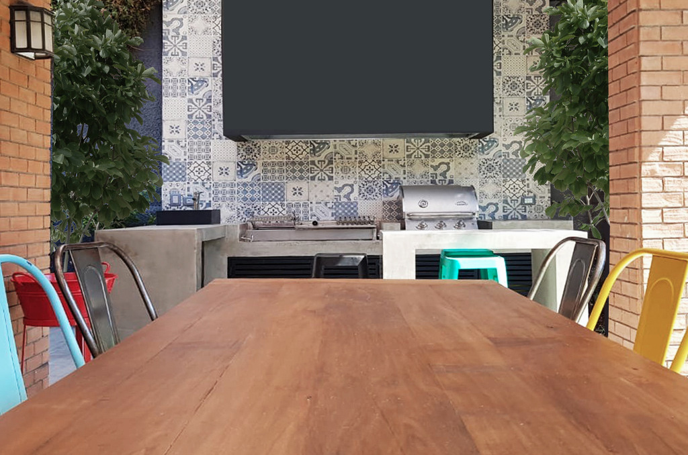
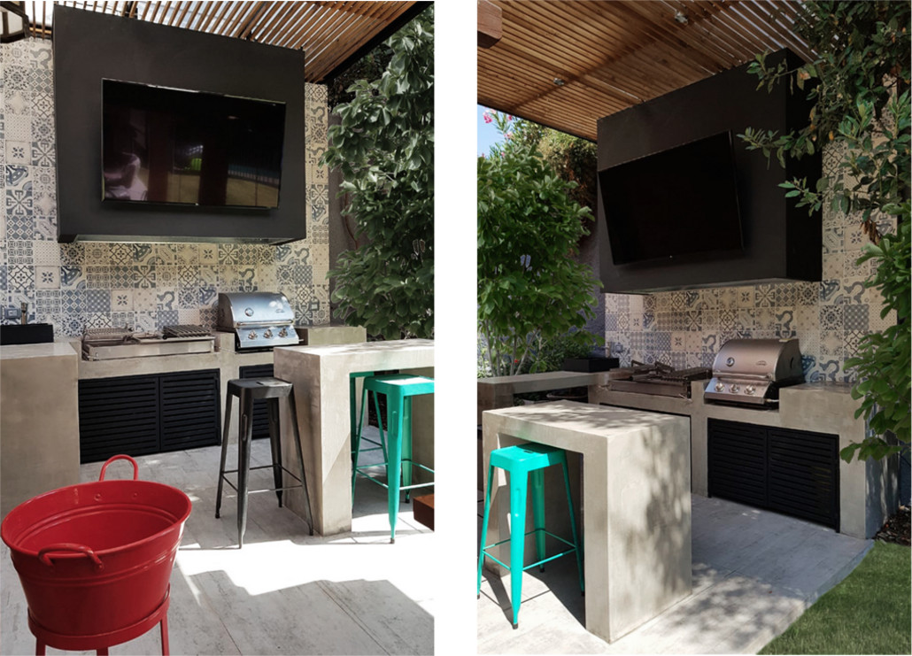

<div class="container project-view">

    <div class="row">
        <div class="col-md-8 project-images">
            
            
            
        </div>
        <div class="col-md-4">
            <div class="project-info">
                <h2 align="center" style="color:rgb(162, 94, 92)">La Huala</h2>

                <div class="details">
                    <div class="info-text">
                        <span class="title">Proyecto:</span>
                        <span class="val" style="color:rgb(162, 94, 92)">La Huala</span>
                    </div>
                    <div class="info-text">
                        <span class="title">Ubicación:</span>
                        <span class="val" style="color:rgb(162, 94, 92)">Lo Barnechea, Santiago.</span>
                    </div>
                    <div class="info-text">
                        <span class="title">Año:</span>
                        <span class="val" style="color:rgb(162, 94, 92)">2018</span>
                    </div>
                    <div class="info-text">
                        <span class="title">Superficie:</span>
                        <span class="val" style="color:rgb(162, 94, 92)">m2: 18 m2</span>
                    </div>
                </div>
                <h4  style="color:rgb(162, 94, 92)">Descripción</h4>
                <p align="justify">
                Para crear este quincho full tendencia, nos inspiramos en un estilo modern vintage donde su principal protagonista son 2 mts de campana que acogen 1.20 mt de parrilla a carbón y 60 cms de parrilla a gas. Para ello creamos el mobiliario en obra con estructura de albañilería revestida con textura de hormigón a la vista y puertas de acero pintado negro. Para el revestimiento de muro y piso escogimos porcelanato en distintos formatos. Para el muro en formato 20x20 con diseños en tonos azules para generar un equilibrado contraste con los tonos grises del piso de formato 30x60.</p>

                
                </p>
                        
                        
            </div>
        </div>
    </div>
</div>
